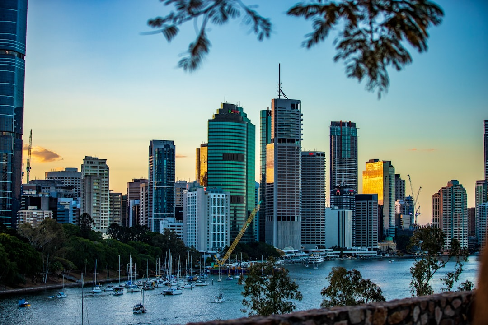

Sourcing business loans in Bendigo can be more complex than a standard home loan. Lenders assess your trading history, cash flow, industry type and security differently, and the same business can receive wildly different offers depending on which lender you approach. This guide explains the main loan types available, what lenders look for, realistic cost ranges, and how working with a local broker changes the outcome.
Business Loans Bendigo: Loan Types and When to Use Each
Not every business finance product works the same way. Matching the right structure to your purpose keeps repayments manageable and avoids unnecessary security requirements.
| Loan type | Best suited for | Typical range |
|---|---|---|
| Unsecured business loan | Short-term cash flow gaps, quick growth spend | $10,000 to $250,000 |
| Secured term loan | Major equipment purchases, expansion, acquisition | $50,000 to $5 million |
| Line of credit | Ongoing working capital, seasonal inventory cycles | $20,000 to $500,000+ |
| Invoice finance | Unlocking cash tied up in outstanding invoices | Up to 80% of invoice value |
| Debtor finance | Trade businesses with long payment cycles | Varies by debtor ledger |
Bendigo's economy spans agriculture, healthcare, construction and retail. A grain grower financing a header will approach a different lender than a medical practice funding a fit-out. Knowing which lenders specialise in your sector is where local broker knowledge pays for itself.
What Lenders Assess for Business Loans in Bendigo
Commercial lending is purpose-built for risk assessment. Lenders look at several factors at once, and a weak score on one can be offset by strength in another.
- Trading history: Most lenders require a minimum of six months trading; two years of financials strengthens your position considerably.
- Revenue and cash flow: A business turning over $200,000 per year with consistent margins is more bankable than one with higher but erratic revenue.
- Credit profile: Both the business entity and director credit histories are assessed. Defaults or judgements must be disclosed upfront.
- Industry type: Some sectors carry higher lender risk ratings (construction, hospitality) which affects rates and available terms.
- Security: Property security unlocks larger facilities at lower rates. Unsecured loans command higher rates to compensate for the lender's increased risk.
- Purpose clarity: A clearly articulated use of funds reduces underwriting friction and speeds approval.
How the Application Process Works
Working with Finance Broker Bendigo moves this process from a guessing game into a structured pipeline. The typical sequence runs as follows.
- Discovery conversation: The broker listens to your purpose, timeframes, security position and preferred repayment structure. No application lodged at this stage.
- Document collection: Business Activity Statements (BAS), profit and loss statements, bank statements (typically the most recent three to six months) and any existing loan schedules.
- Lender shortlisting: The broker matches your profile against their panel of 30 or more lenders, filtering by rate, structure, turnaround and appetite for your sector.
- Pre-approval: A credit assessment is submitted to the preferred lender. Pre-approval commonly arrives within 24 hours for straightforward applications.
- Formal approval and settlement: Full documentation lodged; settlement typically one to five business days from formal approval depending on loan complexity.
Interest Rates and Real Costs
Business loan rates in Australia vary significantly based on loan type, security, lender appetite and the applicant's risk profile. As a general guide in 2026:
- Secured term loans: approximately 7% to 12% per annum (comparison rate)
- Unsecured short-term loans: approximately 15% to 30% per annum; often priced as factor rates
- Lines of credit: approximately 8% to 18% per annum, with interest charged only on drawn funds
These are indicative ranges. The actual rate your business qualifies for depends on your specific financial position and the lender's current book appetite. A broker presenting your application to multiple lenders simultaneously surfaces the competitive tension that drives the rate down.
Finance Broker Bendigo charges $0 broker fees to the borrower; their remuneration is paid by the lender on settlement, which is standard under the MFAA code of practice.
Eligibility Checklist
Before approaching a lender directly or through a broker, gather the following:
- ABN active for minimum six months (twelve preferred)
- Three to six months of business bank statements
- Most recent two years of financial statements (if available)
- Most recent four Business Activity Statements
- Director identification and credit consent
- Details of existing debts and repayment schedules
- Summary of assets and liabilities (personal and business)
Regional Bendigo Context
Bendigo's commercial landscape has expanded considerably over the past decade. The City of Greater Bendigo services a catchment of over 120,000 people and continues to grow, supported by the La Trobe University campus, a strong healthcare precinct, and ongoing residential and industrial development. This creates genuine local demand for construction finance, professional practice fit-outs, trade equipment, and retail working capital.
Regional lending panels include lenders that specifically support agricultural and agribusiness sectors, which is significant for businesses in the Bendigo fringe towns including Castlemaine, Maryborough, Heathcote, and Kyneton. A broker familiar with this regional context can match rural and semi-rural applicants with lenders who understand their seasonal cash flow patterns.
For a broader look at finance brokerage in the region, see the Bendigo finance broker guide covering mortgage, refinancing and asset finance options across Greater Bendigo.
How long does a business loan take to approve in Bendigo?
Pre-approval for a straightforward application is commonly available within 24 hours when submitted through a broker with a prepared file. Full formal approval and settlement typically takes one to five business days from application lodgement, depending on loan type and whether security (such as property) is involved.
Do I need security for a business loan in Bendigo?
Not always. Unsecured business loans up to around $250,000 are available for businesses with a solid trading history and cash flow. Larger facilities, particularly over $500,000, typically require real property or significant asset security to access the lowest rates and longest terms.
What is the difference between a business loan and equipment finance?
A business loan is a general-purpose facility, while equipment finance is secured against a specific piece of equipment or machinery using structures such as a chattel mortgage or finance lease. Equipment finance generally carries lower rates than an unsecured business loan because the asset itself provides lender security. For a Bendigo business needing both, a broker can structure both products together to optimise cost and cash flow.
This guide covers business loan types, eligibility factors, application processes and regional context for borrowers seeking business loans in Bendigo. It is general information only and does not constitute personal financial advice. Lending outcomes depend on your individual circumstances. Consult a licensed finance broker or credit adviser before making borrowing decisions.